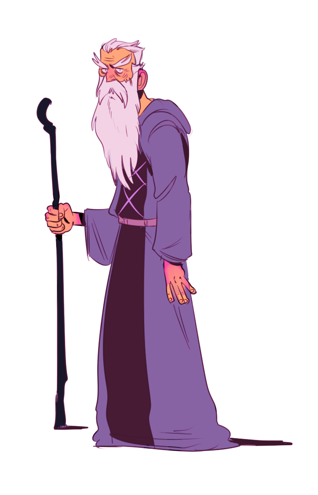

From the very first day Muju Juju was thought of it was always apparent that there would need to be some hardcore Muju cosplay. The original idea was that we would all cosplay as Muju for GDC. We even announced it on Twitter, so you know we were srs.
But so far it's been two GDCs and still there have been no Muju cosplays at GDC. This is problematic. Last year we didn't go to GDC but this year one of us went but didn't cosplay as Muju. Blasphemy.

This is the og portrait of Muju that started it all back during nm game jam days.
So, I decided to make a Muju beard so there are no excuses about cosplaying as Muju from here on out.
How to Make a Muju Beard
I will explain the exact process for creating the beard. First you need to get all the beard making supplies, though.
Wool
String
Hot glue gun
Magical juju
You'll also want to write some code about Muju because he's so inspiring that we made a game about him. Here is an example of the different robe selections you have in the game.
for _, slot in pairs({'robebottom', 'torso', 'front_upper_arm', 'rear_upper_arm', 'front_bracer', 'rear_bracer'}) do
local slot = animation.spine.skeleton:findSlot(slot)
slot.r, slot.g, slot.b = unpack(config.player.colors[color])
end
You can use these game colors as a starting point for when you start to think about what color robe you want to make.
Also, you should start at a then take a break at a to go walk duju.
If you really need moar inspiration then here's a spuju to scare you into doing it.